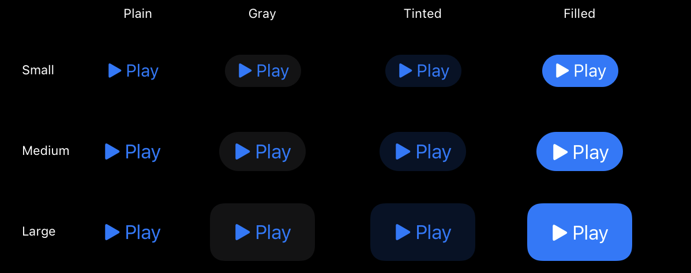
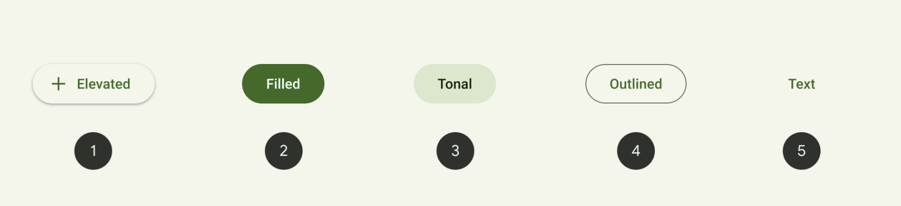
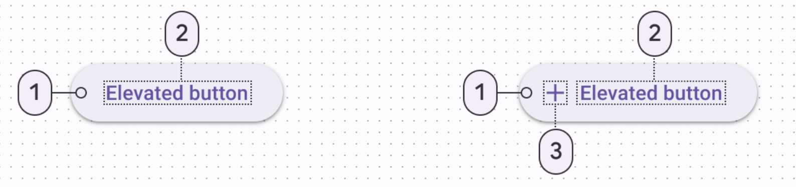

De fleste regner med at det er en guideline til brug af visuelle komponenter, og det er også rigtigt, men et designsystem kan meget mere. Det kan faktisk omfavne alle områder af et digitalt produkt, fra designprincipper og branding, usability og accessibility, og faktisk også kodestumper og regler for teknisk implementering.
I bund og grund defineres et designsystem bedst af hvordan og af hvem der skal bruge det: One-sie, fits-all eller hurtige løsninger findes ikke. Pointen er at se dit kommende designsystem som et selvstændig produkt, der kræver pleje og vedligehold, for bedst muligt at kunne understøtte din virksomheds øvrige digitale produkter.
Når knapper er øjeblikkeligt genkendelige og nemme at forstå, har en app en tendens til at føles intuitiv og veldesignet. Gør knapper nemme for folk at vælge. På en berøringsskærm skal knapper have et mål på mindst 44x44 punkter for at kunne rumme en fingerspids.
På alle skærme er det vigtigt at inkludere nok plads omkring en knap, så folk visuelt kan skelne den fra omgivende komponenter og indhold, uanset om folk bruger berøring, en markør eller et system, der udvider en knap, når den er i fokus.
Sørg for, at hver knap tydeligt kommunikerer formålet. En knap indeholder altid en tekstetiket eller et symbol (eller grænsefladeikon) - og nogle gange en kombination af begge - for at hjælpe folk med at forudsige, hvad den gør.
Knapperne har også 4 forskellige roler, såsom
- Normal - ingen specifik mening
- Primary - Default knap - den knap folk som regel vil trykke på
- Cancel - Knappen vil annullere den nuværende handling
- Destructive - Knappen vil udføre en handling, som vil destruere ens data. Lidt ligesom Cookie Monster, som spiser alle småkagerne, hvor småkagerne er ens data
Google hare 5 forskellige common knapper. Knapperne har meget runde hjørner. Ifølge Google's material design, vil de anbefale følgende, når det kommer til knapper... Alt med måde - jo få knapper jo bedre, hvis der er for mange knapper kan det have negativ indflydelse på ens visuelle hieraki. Knappen skal gerne kommunikere diskrette handlinger klart og tydeligt.
Knappens opbygning:
Elevated button
Filled button
Filled tonal button
Outlined button
Text button
 Hvis man har for mange knapper i samme område, vil de anbefale at man putter de mindre vigtige knapper i en overflow menu (de tre prikker i en vertikal linje) eller som ikon knapper. Knappens vidde skal dynamisk passe til teksten (altså, vidden skal være længere end teksten) Hvis man fx har en knap i et kort design, kan man også justere bredden til at optage hele pladsen (horisontalt)
See the Pen Untitled by Frederikke Jensen (@Frederikke-Jensen) on CodePen.